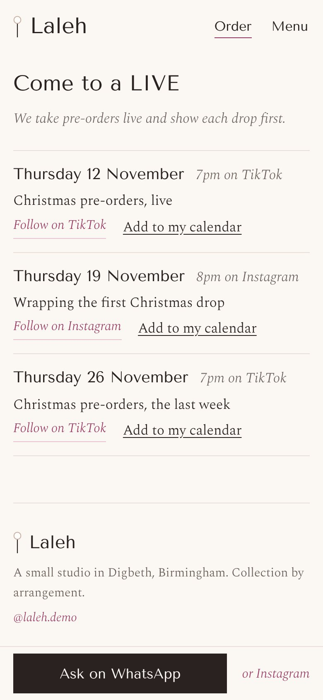
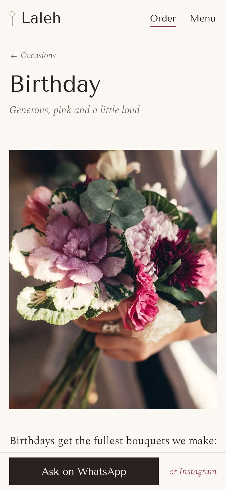
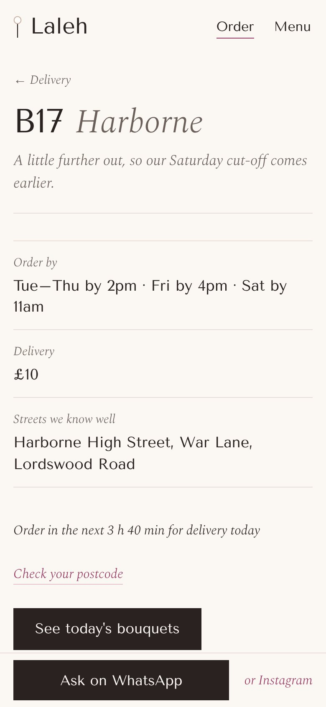

Starter £99 + £25 a month
- The home page and Collect and visit
- Today's bouquets, with what's left from her Sheet
- Ask for this one, for WhatsApp or Instagram
- Same-day delivery and the postcode check
- Send the link
hiya is this one still available??
TodayJust peonies, £55. 2 left. Sold out goes grey on its own. It comes from Laleh's Google Sheet, and a count she hasn't updated in three hours isn't shown at all.
Starter
Laleh sells bouquets from a small studio in Birmingham, mostly through Instagram and TikTok. Every message below is one her customers send all day. Every reply is her Sitefloor site answering it, recorded on a phone.
Send the link. A customer pastes a TikTok, Instagram or Pinterest link, picks a budget and a day, and one WhatsApp message arrives with all three. Any other link is turned away. Try it.
The real check, running here
Starter, the easy extra
Right now, on London time, from Laleh's own delivery settings
Checking the time…
Same-day, honest to the minute. The line above the bouquets counts down to the cut-off and names the next day once it passes. A postcode answers for its own area, with that area's charge.
Starter
Ask for this one. Under every bouquet. It opens a card: the day, the words for the card (held to her length), the add-ons at her prices, and the message exactly as she'll read it. It goes on WhatsApp, or it's copied for an Instagram DM, because Instagram's message links can't carry words.
Starter
Laleh's Friday drop, from here
00days00hours00min00sec
It's open now, until Sunday at 7pm.
The drop. Twenty bouquets every Friday at 7pm. A countdown, then how many are left, read from her Sheet every minute. A count she hasn't touched for ten minutes is never shown: it says check her stories instead.
Signature
LIVE dates. Her next TikTok and Instagram LIVEs, each into the customer's own calendar with a reminder fifteen minutes before. They drop off the page once they've ended.
Plus, the easy extra

Build your bouquet. A colour and a size, and each choice is a bouquet she's made and photographed. Where a size isn't photographed, the nearest one shows and says so. Never a drawing.
Signature
Your order. From the reference in her message: being made, on its way, delivered, with her note at each step and a photo of the actual bouquet before it leaves. She updates one row of her Sheet.
Signature
A page for every day, and every area. Birthday, anniversary, new baby, thank you and love, each with what she'd make, the price and words for the card. Every delivery area has its own page with its own cut-off and charge: the pages people find when they search.
Plus


Instagram lets a florist pin three posts to the top of her profile. The plans work the same way. Each runs on a 12-month minimum, then a month's notice, and any single feature can be added to a smaller plan.
Running costs stay at nothing beyond hosting. What's left, the drop's count and every order's progress live in the florist's own Google Sheet, prices and bouquets in the site's settings, and every order arrives on WhatsApp.
Lighthouse, mobile, on Laleh's home page: 100 on all three runs
The largest picture by 1.5 to 1.7 s
Layout shift, with the feed placed before the page's script runs
And 63 KB of fonts, served by the site itself
Send us your Instagram handle. We'll make a free mockup of your home page with your own bouquets and prices on it.
hello@sitefloor.com